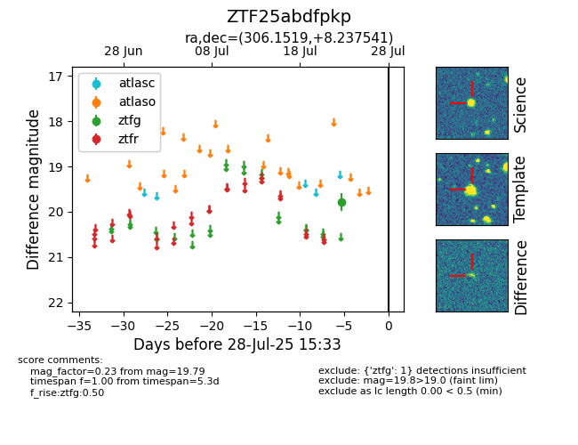

Target ZTF25abdfpkp at 2025-07-28 15:33, see:
FINK: fink-portal.org/ZTF25abdfpkp
Lasair: lasair-ztf.lsst.ac.uk/objects/ZTF25abdfpkp
ALeRCE: alerce.online/object/ZTF25abdfpkp
alt names
ZTF25abdfpkp (ztf,fink)
coordinates:
equatorial (ra, dec) = (306.1519,+8.23754)
galactic (l, b) = (51.5343,-16.43688)
photometry
last ztfg=19.79
1 ztfg detections
